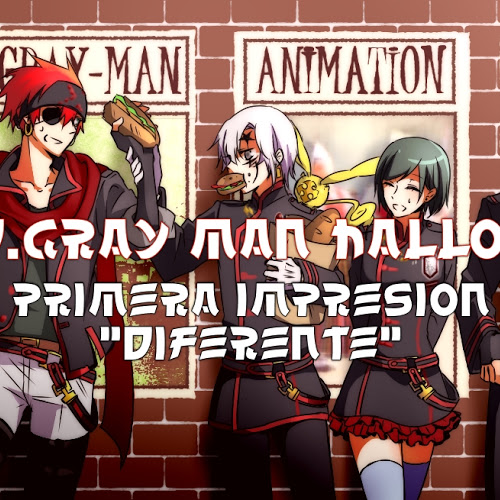

D.GRAY MAN HALLOW PRIMERA IMPRESIÓN "IGUAL PERO DIFERENTE"
06-07-2016
Umm, primero que todo voy a tocar el tema por el cual posiblemente te estés quejando de la serie, y no, no niego que después de 103 episodios con algo característico y que te lo cambien de golpe, causa un poco de repelús. Por ejemplo: SEIYUS (actor de voz) Venga, que después de tantos años era de esperar que los actores de los personajes cambiaran, pero este cambio en particular no agrado a muchos.
Ver más
SHOKUGEKI NO SOUMA: NI NO SARA. NUEVA TEMPORADA
07-07-2016
Si, pocos son los que se dieron cuenta, y muchos los que de hecho no lo extrañaran; pero han cortado una parte antes de la batalla que sinceramente ¡NECESITÁBAMOS!; Hablo del capitulo 61 del manga donde Yukihira y Tadokoro ayudan a Isshiki en un comedor infantil; ¿porque? porque justo al final de este se ve como Tadokoro acepta estar enamorada de Yukihira, y eso... ¡ES IMPORTANTE ¿NO?! esperemos que esta escena se muestre en un futuro (puede llegar al caso).
Ver más
RE ZERO KARA HAJIMERU ISEKAI SEIKATSU CAP 11 ¡FUE MUY HERMOSO!
08-08-2016
Después de superar todos los problemas existenciales en las piernas de Emilia-tan (Cap 7), sucedió el secuestro de los niños, el escape de Subaru hacia la aldea con Rem y la casi muerte que ganó por salvar a la chica de los flequillos azules (Cap 8-9). Luego, el regreso al bosque para salvar Ren con ayuda de Ram, para que mas tarde terminemos descubriendo la historia tras la unión de las hermanas demonios (hoy).
Ver más